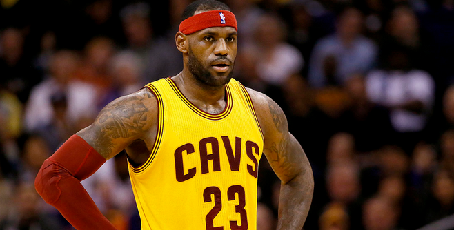
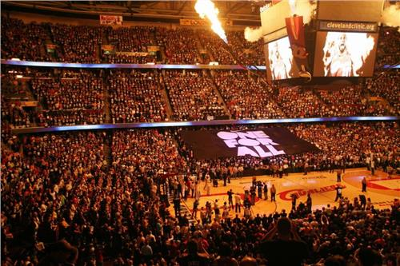
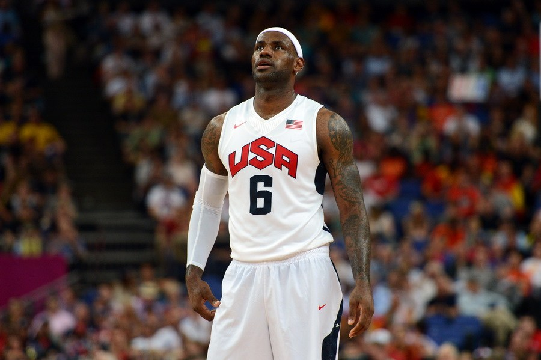
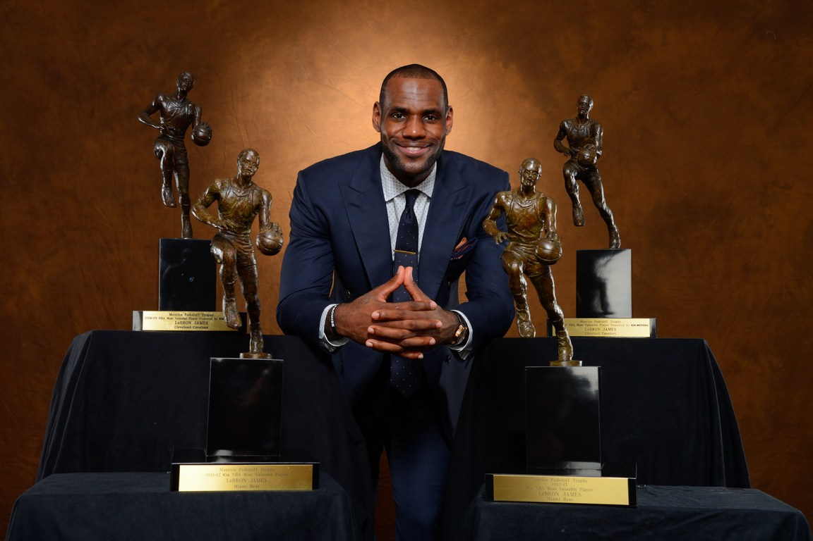
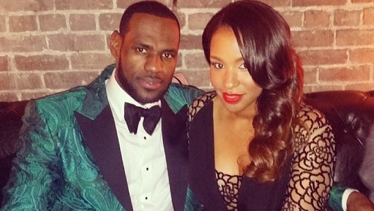

勒布朗·詹姆斯
勒布朗·瑞蒙·詹姆斯（英语：LeBron Raymone James，1984年12月30日－），生于美国俄亥俄州阿克伦，职业篮球运动员，现效力于NBA联盟克利夫兰骑士队，场上位置为小前锋。绰号为“小皇帝”。
勒布朗·瑞蒙·詹姆斯（英语：LeBron Raymone James，1984年12月30日－），生于美国俄亥俄州阿克伦，职业篮球运动员，现效力于NBA联盟克利夫兰骑士队，场上位置为小前锋。绰号为“小皇帝”。
早在初中时期，詹姆斯的天赋就开始显现出来。他的教练带他参加美国业余体育联合会（The Amateur Athletic Union）。詹姆斯在比赛中表现卓越，向人们展示他是那场赛事中最好的球员。他的球队也在他的带领下一路披荆斩棘，来到了决赛。但可惜的是，詹姆斯错过绝杀，他的球队屈居亚军。在这次旅行中，詹姆斯结识了三个一生的朋友，他们就像家人一般天天待在一起。他们自称为“披头四”（the fab four），并决定要进入同一所高中并继续一起打球。
高中一年级詹姆斯以21分6篮板，带领圣文森-圣玛丽高中以27胜0败的巨大优势赢得了俄亥俄州三级联赛冠军（Ohio Division III State Champion）。
在高中的第二年，Romeo也加入了这支球队。他与勒布朗和他的小伙伴们不同，他与他们很疏远。跟詹姆斯和他的伙伴们互相扶持不同，Romeo不喜欢关心别人。在这一年，James平均拿下25.2分和7.2个篮板，圣文森-圣玛丽高中以26胜1负的战绩卫冕了州冠军，由于James的杰出表现, James获选为俄亥俄州篮球先生（Ohio's Mr. Basketball）及USA Today选出的高中全美第一队。
在高中的第三年, James成为第一位登上Sports Illustrated封面的高中篮球员，并以29分8.3个篮板5.7次助攻3.3个抢断的成绩蝉联俄亥俄州篮球先生及USA Today高中全美第一队，并且成为第一位得到Gatorade National Player of the Year Award的高三学生，圣文森-圣玛丽高中本季拿到23胜4负的成绩，却在二级联赛冠军赛（Ohio Division III State Championship）时，输给了Roger Bacon。
在经历了高中三年级与Roger Bacon的比赛的失利之后，詹姆斯所在的St.V & St.M高中球队仅在当时的"全美高中男子篮球队Top 25"中排名第23。为了改变这样的窘境，球队开始在全国范围内与各支球队比赛。在詹姆斯的带领下，在短短几个月内St.V & St. M就以全胜的成绩成为全美排名第一的高中男子球队。詹姆斯在篮球上惊人的天赋和在球队中的领导力开始展现出来，有评论称“17岁的勒布朗要比科比▪布莱恩特17岁时更加出色”。
然而有关詹姆斯的负面的新闻也随之而来。有媒体称詹姆斯接受了一辆悍马，“而作为一个高中学生，这种职业球员的生活方式是无法容忍的”。之后事件不断恶化，詹姆斯最终因被指控收受了他人提供的球衣和篮球鞋而被禁赛两场。
在高四这一年, James平均可以得到31.6分9.6个篮板4.6次助攻3.4个抢断，James再次获选为亥俄州篮球先生及USA Today高中全美第一队，并连续两年蝉联Gatorade National Player of the Year Award，同时他也出席了三大年终高中明星赛—the EA Sports Roundball Classic，the Jordan Capital Classic，and the 2003 McDonald's All-American Game，圣文森-圣玛丽高中也在四年内第三度夺得州冠军。
奈史密斯高中篮坛MVP：2003年
高中四年篮球生涯中总共获得2657分、892个篮板和523次助攻
连续三季获得俄亥俄州“高中篮球先生”的荣誉（2000－01、2001－02、2002－03）
2000-01赛季成为史上第一位入选《今日美国》全美第一队的高二生
连续三季入选《今日美国》全美第一队（2000－01、2001－02、2002－03）
带领圣文森-圣玛丽高中篮球队参加了四个赛季的比赛，并夺得3次州冠军（1999－00、2000－01、2002－03）
亦曾经参与美式足球运动，被选入全州第一队，位置是外接员
2003-04年

詹姆斯在2003年6月26日的NBA选秀会上以第一轮第一顺位被克利夫兰骑士选中。
2003年10月29日，生涯的第一场比赛面对萨克拉门托国王，取得25分、6篮板、9助攻及60%的投篮命中率（20投12中）。
2003年11月29日，面对曼菲斯灰熊，攻下33分，成为NBA史上最年轻达成单场30分的球员（18岁334天）。
2004年3月27日，对战新泽西篮网，取得41分，成为NBA史上最年轻达成单场40分的球员（19岁88天）。
詹姆斯在新秀赛季场均20.9分、5.5篮板、5.9助攻，是继前辛辛那提皇家(国王前身)后卫奥斯卡·罗伯逊及前芝加哥公牛队后卫迈克尔·乔丹后，NBA史上第三位于新秀球季就能得到平均“20分、5篮板、5助攻”的球员。
这个赛季骑士队的成绩是35胜47负，比上季多赢得18场比赛，未能进季后赛。
2004-05年
2005年1月19日，对决波特兰开拓者队，全场攻下27分、11篮板、10助攻，完成个人职业生涯的第一次“三双”。
2005年2月20日，詹姆斯生涯首次入选为NBA明星队赛东部首发球员，缴出13分、8篮板、6助攻，最后东部明星队以125-115击败西部明星队。
2005年3月20日，对上多伦多猛龙，攻下个人生涯单场最高的56分，也成为NBA史上最年轻单场得到50分的球员（20岁80天），不过此纪录已在2009年11月14日被布兰登·詹宁斯的20岁52天所改写。
骑士队在此赛季最终取得42胜40败，虽和东部第八的篮网战绩相同，但因骑士在常规赛和篮网的对战成绩为1胜3败，仍未能进季后赛。
2005-06年
2006年2月19日，詹姆斯再次入选明星队赛东部首发，送出29分、6篮板、2助攻的表现，协助东部明星队以122-120击败西部明星队，赛后詹姆斯获选为明星赛MVP，以21岁51天成为史上最年轻的明星赛最有价值球员。
2006年3月22日~4月8日，詹姆斯连续九场比赛得分在35分以上，自1970年代起，只有迈克尔·乔丹及科比·布莱恩特才能达成这项记录。
詹姆斯在本赛季平均取得31.4分、7.0篮板、6.6助攻，成为NBA史上最年轻达成单季平均超过30分的球员（21岁107天）。同时，他也是史上第四位单季平均在30分、7篮板及6助攻以上的球员。
骑士队本季战绩50胜32败，以东部第四种子晋级季后赛，也是1998年以来首次晋级，首轮将遇到华盛顿奇才队。
2006年4月22日，詹姆斯在生涯的第一场季后赛取得32分、11篮板、11助攻的“三双”，骑士队也以97-86击败对手，他是继约翰尼·麦卡锡及魔术师约翰逊后，第三位在生涯首场季后赛中取得三双的球员，最终骑士六场比赛将奇才淘汰。詹姆斯在季后赛平均攻下30.8分、8.1篮板、5.8助攻。不过在第二轮，骑士即被底特律活塞淘汰出局。
2006-07年：首次打入总决赛

2007年2月18日，詹姆斯连续第三年获选为明星赛东部首发前锋，他取得28分、6个篮板及6次助攻，但最后东部以132比153不敌西部。
此赛季骑士队以50胜32败的成绩成为东部第二种子晋级季后赛。首轮遇上的对手和前一年一样是华盛顿奇才队，最终骑士队以4-0击退对手。
第二轮遇到的对手是新泽西篮网队，骑士队第六战在客场88比72大胜对手，4-2将新泽西篮网淘汰出局，这也是骑士队自1992年以后首次晋级东部决赛。东部决赛他们面对到的对手是底特律活塞队，活塞已连续第四年都至少打进东部决赛，并曾在2004年拿过总冠军。
骑士队前两战在客场皆以76比79落败，但最后他们在第六战以98比82胜出，连胜四场晋级总决赛。詹姆斯在第五场比赛表现出色，个人取得48分、9篮板、7助攻，并且还包办球队最后30分中的29分，在历经了二度加时后，以109比107击败了活塞，骑士队也获得了队史上的第一个东部冠军。
在总决赛中，面对的对手是圣安东尼奥马刺队，最后骑士遭到马刺直落四场横扫击败[8]。詹姆斯在总决赛中遭到马刺的严防，表现不尽理想，平均得分是22.0分、7.0篮板、6.8助攻，和前三轮平均25.8分、8.3篮板、8.3助攻的表现有段落差。整个季后赛的平均则是25.1分、8.1篮板、8.0助攻。詹姆斯也成为第一位骑士队的非后卫球员达成连续8场比赛单场至少都有7次助攻。
2007-08年
2008年，詹姆斯连续4年入选东部明星队，在NBA明星赛上阵。他成为比赛中的最有价值球员，以27分、8个篮板、9个助攻、2个抢断及2个盖帽协助东部;以134-128击败西部。2008年2月27日，詹姆斯在对波士顿凯尔特人的比赛中，取得了个人生涯的第10,000分。他仅以23岁59天，成为最年轻达成10,000分的球员（旧记录是科比·布莱恩特的24岁159天），此外他花了368场完成10,000分，是NBA第九最快的记录。3月21日对多伦多猛龙的比赛中，取得29分，取代布拉德·多赫蒂成为骑士队总得分最高的球员，以10414分超过多赫蒂的10389分。詹姆斯是2007-08球季常规赛平均得分最高的球员，不过在常规赛MVP不敌科比·布莱恩特和克里斯·保罗之下得第三。但成为了NBA的得分王。詹姆斯以45胜37负成绩带领球队晋身季后赛，在第一圈面对华盛顿奇才，以总场数4-2击败对手。在第二圈面对波士顿凯尔特人，骑士迫使凯尔特人进入第七场比赛，并与皮尔斯对飙，分别砍下41分与45分，但最终绿衫军的皮尔斯似乎是受到红头的保佑，第1罚力道稍大仍然进球，第2罚稳稳入袋，宣判骑士的死刑。最后骑士以3:4败北，未能再进一步。
2008-09年
2月4日作客对纽约尼克斯的赛事中，詹姆斯几乎完成自1975年贾巴尔以来个人得分超过50分的三双，在比赛中取得52分、11次助攻及9个篮板。原本赛后的统计是抓到10个篮板，但之后修正为9个篮板。
2009年2月20日詹姆斯取得55分协助球队击败密尔沃基雄鹿。在3月10日至13日，连续三场赛事取得三双成绩。3月25日骑士击败篮网后，协助球队取得自成立以来最好的成绩。
2009年4月16日。骑士主场1分惜败76人，原因是詹姆斯和伊尔戈斯卡斯突然穿着西装观战，莫·威廉姆斯闲逛在家，再加上本。华莱士和乔。史密斯已经因伤缺阵了多场比赛，因此错失了联盟最佳成绩。
詹姆斯成为常规赛最有价值球员，是骑士队历来夺得此荣誉的最年轻球员。亦首次进入NBA防守一队。在季后赛，带领骑士队以不败的姿态击退底特律活塞及亚特兰大老鹰率先晋身东部决赛，对手是奥兰多魔术，但是第一场比赛就遭到魔术顽强反击，希达耶特·特科格鲁最后关头命中关键球，随后助攻刘易斯确立领先。此役更被特科格鲁拿下15分14次助攻。第二场比赛，魔术与骑士战斗到最后关头，特科格鲁突破后左侧跳投命中；詹姆斯在最后1秒面对特科格鲁起手射进一球三分球，以96-95反胜。但是最后在第六场比赛以总场数2-4败于魔术。
2009-10年
詹姆斯连续六次参加NBA明星赛，更连续三年取得250万票。2月18日与同梯好友安东尼上演顶尖对决，取得43分、13个篮板及15次助攻，最后116-118惜败丹佛掘金。这是自1962年2月13日奥斯卡·罗伯逊以来首次有球员在单场比赛取得40分、13个篮板及15次助攻。。詹姆斯虽然成功带领骑士以东部首名晋身季后赛，成为常规赛最有价值球员。第一轮顺利淘汰芝加哥公牛队，季后赛第二轮的对手是波士顿凯尔特人，其中第五场14投三中取得15分。虽然第六场赛事取得季后赛第六个三双，但仍以85-94不敌波士顿凯尔特人而遭淘汰出局。詹姆斯将在新球季换穿6号球衣，原因是为了尊重迈克尔·乔丹而放弃自己原有的23号背号。
2010年转队风波：骑士→热火
在2009-10年球季结束后，詹姆斯成为自由球员，传闻芝加哥公牛、迈阿密热火、纽约尼克斯、达拉斯小牛及洛杉矶快船皆对他有极大的兴趣。2010年7月8日，詹姆斯透过ESPN举办的全国直播特别节目“The Decision”宣布与热火队签约，将与德怀恩·韦德和克里斯·波什组成热火三巨头。此事让克利夫兰骑士队的球迷为之气结，甚至公开烧毁市面贩售的詹姆斯球衣。
2010-11年：再度打入总决赛
詹姆斯第七次入选明星赛，砍下29分、12个篮板和10次助攻，成为继迈克尔乔丹之后，在明星队赛上第2个拿到三双的球员。詹姆斯替热火首场上阵赛事面对波士顿塞尔蒂克，虽然他独自得到31分，但在两名主力波什及韦德失准的状况下，以80-88的结果负于对手。12月18日对纽约尼克斯的比赛中取得32分、11个篮板及10次助攻取得当季第二个三双。
12月3日，热火队作客克利夫兰骑士的比赛中，詹姆斯对老东家取得了38分、5个篮板和8次助攻，热火队118比90击败骑士。在12月25日对洛杉矶湖人的赛事中，取得27分、11个篮板及10次助攻的赛季第三个三双。在圣诞节带领热火队击败湖人队，也是第一次有球员在耶诞大战中得到三双的成绩。
詹姆斯在常规赛平均取得26.7分，在联盟排行第二，但未能成功卫冕MVP奖项。在季后赛四强第五场比赛对凯尔特人与获迪合共攻入67分，协助球队在第五场赛事反胜对手，以场数4-1晋级。在东部决赛对芝加哥公牛第五场赛事中，取得28分之余，完场前更盖帽德里克·罗斯的三分球，协助球队以总场数4-1打进总决赛。
在总决赛中，热火即使在取下了关键的第三场比赛，使热火2:1领先小牛，但在第四场对小牛的比赛，詹姆斯11投仅仅命中3球，得到职业生涯季后赛最低的8分，让总比分变成2:2，最终以2:4输给小牛，个人职业生涯第二次与总冠军擦身而过，总决赛詹姆斯平均只得17.8分，较季后赛总体的23.6分略为不符，更因为数场总决赛第四节的疲软表现为人诟病。
2011-12年：首次夺冠
詹姆斯第八次入选明星赛，和西部凯文·杜兰特同时得到全场的最高分36分以及6个篮板和7次助攻。詹姆斯至今8场明星赛共得207分，平均25.9分史上最高。
2012年2月4日，詹姆斯对费城76人比赛时，得到19分。职业生涯总得分达到18004分，以27岁36天超越科比·布莱恩特特的28岁156天。成为NBA总得分最年轻达成18000分的球员。及后在东部决赛面对波士顿凯尔特人，前五战打完热火是2:3落后，第六战又要客场作战，詹姆斯再度在季后赛来到淘汰边缘。但他在第六场比赛攻下45分，摘下15个篮板以及传出5次助攻，帮助球队取得胜利（他也是继1964年威尔特·张伯伦的50分、15篮板、6助攻以来，第一个在季后赛能有至少45-15-5的球员）。第七战也在主场获胜再次晋级总决赛，对手是由杜兰特领军的俄克拉荷马城雷霆。
在总决赛中，热火队先在客场遭雷霆逆转输掉第一战。但第二战他们在客场拿下胜利，第三到第五战回到主场又拿下三连胜，以总比分4:1夺得总冠军，其中詹姆斯于第四场在大腿抽筋的情况下重新回到场上并投进领先三分球，成为此系列的经典镜头之一。詹姆斯在第五战得到三双（26分、11篮板、13助攻），也是史上第七位总决赛至少有两次三双的球员。詹姆斯总决赛平均28.6分、10.2篮板、7.4助攻的全面表现也让他获颁总决赛MVP，而他在整个季后赛23场比赛的平均则是30.3分、9.7篮板、5.6助攻。
2012-13年：成功卫冕冠军
2013年1月16日，对战金州勇士队，全场取得25分、10次助攻，达成生涯得分两万分加五千次助攻，取代科比·布莱恩特（29岁122天），成为NBA史上最年轻的两万分球员（28岁又17天）。
2013年2月4日，对上夏洛特山猫队，整场比赛14投13中，命中率高达92.9%，取得31分、8篮板、8助攻，成为继1967年的威尔特·张伯伦后第一位达成单场至少30分、8篮板、8助攻，命中率又在90%以上的球员。
詹姆斯在2月3日－2月12日的连续6场比赛，皆有至少30分和60%的投篮命中率，创下NBA的新纪录（旧纪录是1979年的艾德里安·丹特利和1982年的摩西·马龙的连5场）
2月3日对多伦多猛龙攻下30分，16投10中，命中率62.5%
2月4日对夏洛特山猫攻下31分，14投13中，命中率92.9%
2月6日对休斯敦火箭攻下32分，18投11中，命中率61.1%
2月8日对洛杉矶快船攻下30分，11投9中，命中率81.8%
2月10日对洛杉矶湖人攻下32分，18投12中，命中率66.7%
2月12日对波特兰开拓者攻下30分，15投11中，命中率73.3%
2013年2月26日，面对萨克拉门托国王队，攻下40分还传出生涯新高的16次助攻，带领球队在二度加时中取得胜利。詹姆斯也是NBA史上第四位达成单场至少40分加15助攻的球员（前一位是凯文·约翰逊在1994年4月3日的42分17助攻）。巧合的是，约翰逊目前正是萨克拉门托市的市长。
詹姆斯率领球队在2月3日~3月25日缔造了NBA史上第二长的27连胜，他在连胜期间的平均数据是优异的27.0分、8.1篮板、8.0助攻、1.9抢断、57.5%命中率。
最终热火队在本赛季创下了队史最佳的单季66胜，也取得了每一轮季后赛的主场优势。首轮对密尔沃基雄鹿队，以平均14.75分的胜分直落四轻松淘汰对手，进入第二轮。
第二轮遇到芝加哥公牛队，热火在休息太久的情况下，首战在主场以86-93落败，但第二战以115-78大胜37分，创下热火队史季后赛单场最多胜分，也是公牛队史季后赛单场最多败分。第四战在公牛主场，热火只让对手得到65分，第三节只让对手得到9分，两双打破公牛队史最低纪录，最后热火也取得四连胜以4比1晋级东部决赛。
东部决赛中遇到印第安纳步行者队，第一场比赛热火就陷入了苦战，但在LBJ最后读秒阶段上篮绝杀，拿下第一战胜利，然而步行者队的内线优势实在太大，且后起之秀保罗‧乔治强势窜起，两队一路缠斗到第七场，差点使得热火队遭到淘汰，但LBJ借由29分7.3篮板5.4助攻及0.510的命中率替热火连三年拿下东部冠军。
在总决赛中，詹姆斯外线准头失常，导致热火一路苦战，并于第五场遭受挫败（系列赛2:3落后马刺），热火第六战一路落后濒临淘汰，第四节詹姆斯在头戴被打落以后射入三分球把分数拉距追近3分，最后阶段靠着雷·阿伦的关键三分球追平比数，进入延长赛。在加时阶段最后1.9秒詹姆斯射入2个罚球，使得热火完成传奇般的获胜。热火与马刺进入第七战，抢七战詹姆斯逆势反弹，3分连发，并于最后28秒投进关键2分，最终在37分、12篮板和4助攻的表现下，帮助热火队4：3击败圣安东尼奥马刺队卫冕总冠军。37分追平了抢七战最高得分纪录。7场系列赛，詹姆斯平均25.3分、10.9篮板、外加7次助攻再次获得NBA总决赛MVP。他包办了季赛和总冠军赛的MVP。13年可说是詹姆斯声势达到最巅峰的一年让许多球迷尊称其为“詹皇”。
2013-14年
2014年3月4日，热火队在主场对战山猫，詹姆斯全场33投22中，其中三分球10投8中（追平生涯三分球进球纪录），狂砍61分7篮板5助攻，创下个人生涯得分新高（同时也打破热火队史纪录），热火也以124-107赢球。2014年3月19日，热火对客场迎战老东家骑士，詹姆斯再飙43分，命中率达到73.7%。
詹姆斯率领球队以东部第二种子晋级季后赛，以4-0和4-1接连击败山猫和篮网，连续四年晋级东部决赛。东部决赛以4-2击败步行者，连续4年赢得东部冠军更闯进总决赛。但总冠军赛热火，第二场克里斯。波什关键时刻投进致胜一球，是唯一赢下的一场，以1-4几乎场场惨败马刺，创下历史最惨纪录之一。
2014-15年:重返骑士
2014年7月11日，跳出合同成为自由球员。詹姆斯向球迷写感性文章检讨自己的错误，正式宣布将回到职业生涯的起点克利夫兰骑士。与克利夫兰骑士签下2年4221.7万美元合同，第二年为球员选择权。
经过一个赛季的磨合，詹姆斯成功带领骑士队以东部第二杀入季后赛。虽然在于季后赛首轮对上凯尔特人的比赛当中，骑士队失去了主将凯文·乐福，不过在骑士队仍然众将发威之下4:0淘汰对手。
东部半决赛中，虽然让对手芝加哥公牛取得了2:1的优势，不过在第四战的最后关头，詹姆斯投出了致胜绝杀扳平了战局，最后以4:2成功淘汰对手。
东部决赛中，詹姆斯屡有精彩的表现，尤其是第三场37分18篮板13助攻的超三双的演出，是詹姆斯季后赛生涯12次三双，超越Jason Kidd（现密尔沃基雄鹿队教头），也是NBA史上仅次于“魔术”约翰逊的30次。最后以4:0横扫了对手老鹰，带领骑士睽违8年再度进入了总决赛（也是詹姆斯本人连续五年都打进了总冠军赛）。虽然在总冠军系列拥有平均攻下35.8分、13.3篮板与8.8助攻的鬼神数据，不过因失去了球队主力，所以还是以2:4败给了由浪花兄弟所带领的勇士队。2015年夏天詹姆斯宣布不执行球员选择权跳出合同，但表态愿意续留骑士，最后以2年4760万美元与骑士签约。

詹姆斯在2004年夏季奥林匹克运动会首次替国家队上阵，最后夺得一面铜牌。平均取得7.2分、1.3篮板、2.2助攻。
詹姆斯亦被选为2006年世界男子篮球锦标赛美国队成员。平均得到13.9分、4.8个篮板及4.1个助攻，为美国队夺得一面铜牌。
詹姆斯参加2008年夏季奥林匹克运动会篮球赛事，穿起六号球衣，缴出平均15.5分、5.3篮板、3.8助攻，协助美国队以全胜姿态夺得金牌。2010年他则是以事忙为由婉拒参加世界篮球锦标赛。
而在2012年夏季奥林匹克运动会中，詹姆斯加入“梦幻十队”，再度代表美国出征。他在在这届比赛上超过大卫·罗宾逊的270分，成为美国队历史上得分最多（273分）的球员。另外在八强赛面对澳洲队时演出三双（11分14篮板12助攻），成为奥运男篮史上第二位取得三双的球员，也是美国队史上第一位。詹姆斯平均上场25.1分钟，贡献13.3分、5.6篮板、5.6助攻，还有0.603的高命中率（73投44中），美国队也赢得了金牌。

第2位在同一年里囊括四大荣誉“年度MVP、总冠军、总决赛MVP、奥运金牌”的球员（2012年）（第一位是1992年的迈克尔·乔丹）
2次总冠军：2012年、2013年
2次总决赛MVP：2012年、2013年
6次东部冠军：2007年、2011年、2012年、2013年、2014年、2015年
4次年度MVP：2009年、2010年、2012年、2013年
第2位在5年内拿下4座年度MVP
2013年追平2000年的沙奎尔·奥尼尔在年度MVP票选的最高得分1207分（获得121张第一名选票当中的120张）
年度最佳新秀：2004年
新秀第一队：2004年
9次年度第一队：2006年、2008年~2015年
2次年度第二队：2005年、2007年
5次年度防守第一队：2009年~2013年
11次明星队赛：2005年~2015年
2次明星队赛MVP：2006年、2008年
6次东部单月最佳新秀
25次东部单月最佳球员
51次东部单周最佳球员
生涯平均得分第三（27.56分）
1次常规赛得分王：2007-08赛季（30.0分）
最多次（7次）达成单季2000分、500篮板、500助攻（2005年、2006年、2008年~2011年、2013年）
最快达成10000分、2500篮板、2500助攻、600抢断、300盖帽（382场-10464分、2637篮板、2518助攻、676抢断、300盖帽）
最快达成20000分、5000篮板、5000助攻、1200抢断、600盖帽（726场-20007分、5244篮板、5008助攻、1255抢断、616盖帽）
第3位新秀赛季平均在20分5篮板5助攻以上（20.9分5.5篮板5.9助攻）
第2位在明星赛达成三双（2011年2月20日-29分12篮板10助攻）
明星赛史上累计投进最多三分球（23球）
第3位季后赛初登场三双（2006年4月22日-32分11篮板11助攻）
单季最多场季后赛得分在25分以上（2012年-21场）
1985年以后，季后赛最长连续场次得分在28分以上（连续13场-2012年5月20日~6月17日）
4次ESPY奖NBA年度最佳球员：2007、2009、2012、2013
2次ESPY奖年度最佳男运动员：2012、2013
20次《运动画刊》的封面人物
1次《运动画刊》的年度最佳运动员：2012
2003年6月26日成为最年轻选秀状元（18岁178天）
2004年雅典奥运成为美国男篮史上最年轻的国家队队员（19岁）
2003-04赛季-最年轻获选年度新人王（19岁）
2003-04赛季-最年轻入选新秀第一队（19岁）
2004-05赛季-最年轻入选年度第二队（20岁）
2005-06赛季-最年轻入选年度第一队（21岁）
2005年4月11日-最年轻达成单季2000分（20岁102天）
2005-06赛季-最年轻达成单季平均30分（21岁）
2003年11月29日-最年轻单场得30分（18岁334天）
2004年3月27日-最年轻单场得40分（19岁88天）
2004年2月9日-最年轻达成生涯1000分（19岁41天）
2004年11月27日-最年轻达成生涯2000分（19岁333天）
2005年3月2日-最年轻达成生涯3000分（20岁62天）
2005年11月13日-最年轻达成生涯4000分（20岁318天）
2006年1月21日-最年轻达成生涯5000分（21岁22天）
2006年3月29日-最年轻达成生涯6000分（21岁89天）
2006年12月23日-最年轻达成生涯7000分（21岁358天）
2007年3月14日-最年轻达成生涯8000分（22岁74天）
2007年12月17日-最年轻达成生涯9000分（22岁352天）
2008年2月27日-最年轻达成生涯10000分（23岁59天）
2008年11月18日-最年轻达成生涯11000分（23岁324天）
2009年2月3日-最年轻达成生涯12000分（24岁35天）
2009年10月27日-最年轻达成生涯13000分（24岁301天）
2010年1月2日-最年轻达成生涯14000分（25岁3天）
2010年3月19日-最年轻达成生涯15000分（25岁79天）
2010年12月23日-最年轻达成生涯16000分（25岁358天）
2011年3月18日-最年轻达成生涯17000分（26岁78天）
2012年2月3日-最年轻达成生涯18000分（27岁35天）
2012年4月19日-最年轻达成生涯19000分（27岁111天）
2013年1月16日-最年轻达成生涯20000分（28岁17天）
2013年4月6日-最年轻达成生涯21000分（28岁97天）
2014年1月10日-最年轻达成生涯22000分（29岁11天）
2014年4月4日-最年轻达成生涯23000分（29岁95天）
2015年1月17日-最年轻达成生涯24000分（30岁17天）
2012年6月3日-最年轻达成季后赛3000分（27岁156天）
2005年1月19日-最年轻完成三双（27分11篮板10助攻）（20岁20天）
2004-05赛季-NBA史上第5位，也是最年轻（20岁111天）的一位球员达到单季平均27分7篮板7助攻（27.2分7.4篮板7.2助攻）
2005-06赛季-NBA史上第4位，也是最年轻（21岁107天）的一位球员达到单季平均31分7篮板6助攻（31.4分7.0篮板6.6助攻）
2006年2月19日-最年轻获得明星赛MVP（21岁51天）
2013年1月16日-最年轻达成生涯20000分、5000篮板、5000助攻（28岁17天）
2013年5月5日-最年轻拿下生涯第4座年度MVP（28岁126天）
2015年11月3日-最年轻达成生涯25000分 (30岁307日)
2016年1月30日-最年轻达成生涯26000分 (31岁30日)
4次NBA亚军,为现役球员亚军次数最多的纪录保持者
詹姆斯身高203公分，体重113公斤，在他的主要位置小前锋或后卫的对位上往往有身材优势，他还同时拥有极佳的速度、弹跳力和身体对抗能力，这使他甚至能打到大前锋(甚至中锋)的位置，他主要的得分手段是切入上篮、扣篮以及低位单打，往往能造成三分打，2012-13球季已将3分球命中率提升到40.06%。同时他还有很好的篮板以及助攻能力，两项数据生涯场均皆在7左右，抢断和盖帽的成绩也不差，只是他的罚球稍差，平均每场获得8.6次罚球机会却只罚进6.5球，约74.7%的命中率。
詹姆斯的防守意识也相当不错，在比赛中时常能看到他从后方追身盖火锅，或是断球后的快攻扣篮，甚至自己抓下防守篮板后也能快速突破取分，后卫的速度使他能快速的进行攻防转换，同时他也具有相当好的控球能力和全场视野，经常担任控球前锋的角色，在这个位置上他具有极大的身材优势，他的进攻往往能吸引对手两到三名球员的包夹防守，从而使队友获得许多空档出手的机会。
詹姆斯在骑士队时有洒止滑粉的赛前仪式，在骑士时期这个动作能吸引众多球迷的目光，成为他的商标之一。主场作战时常有几万名球迷一起洒粉，十分壮观。
2010-2011，球衣的销售量排在第一位。
2008年，由Kristopher Belman所导的电影不只是一场比赛登上大屏幕。记录了詹姆斯在高中时期如何带领圣玛莉中学夺得三次州冠军。
詹姆斯在2011年总决赛败给小牛队后下定决心要再进步，于是拜师火箭名人堂中锋阿基姆·奥拉朱旺学习低位单打。在下个赛季詹姆斯的低位单打有了大幅度的进步，并使他的整体命中率达到53.1％
詹姆斯亦曾经在喜剧《生活残骸》中客串饰演自己，其搞笑演技获得不少观众赞同。除此之外，有传有电影公司有意开拍《空中大扣篮》续集，属意找詹姆斯为主角。如电影能顺利开拍将会在2017年上映。

2011年，詹姆斯在迈阿密的一场跨年晚宴与生日宴会上向高中校友莎凡娜·布琳森（Savannah Brinson）求婚，两人在2013年九月结婚，目前拥有两个儿子。长子小勒布朗·詹姆斯（LeBron James Jr.[56]），于2004年10月6日出生；次子布莱斯·迈克希姆·詹姆斯（Bryce Maximus James），于2007年6月14日出生。
2011年4月，透过旗下LRMR Branding & Marketing公司，与英超利物浦足球会母公司芬威体育营销集团达成协议，透过为该支5届欧冠杯盟主代言进行品牌推广，获得球会少量股份，成为股东。
科比·布莱恩特（英语：Kobe Bryant，1978年8月23日－）是一名已退役的美国NBA篮球传奇球星，普遍被认为是历史上最有资格与“篮球之神”迈克尔·乔丹(Michael Jordan)相提并论的球员。有“黑曼巴”、“小飞侠”之称。
勒布朗·瑞蒙·詹姆斯（英语：LeBron Raymone James，1984年12月30日－），生于美国俄亥俄州阿克伦，职业篮球运动员，现效力于NBA联盟克利夫兰骑士队，场上位置为小前锋。绰号为“小皇帝”。